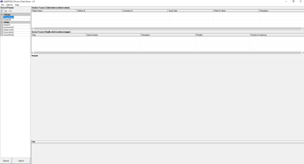

|
DICOM Client Demo
Demonstrates implementation of a DICOM client.
- Connect to a query an existing DICOM server (PACS)
- Implements DICOM C-STORE SCU
- Implements DICOM C-MOVE SCU
- Implements DICOM C-FIND SCU
- Implements DICOM C-ECHO SCU
- Demonstrates connect, associate, query, and retrieve
|
 |